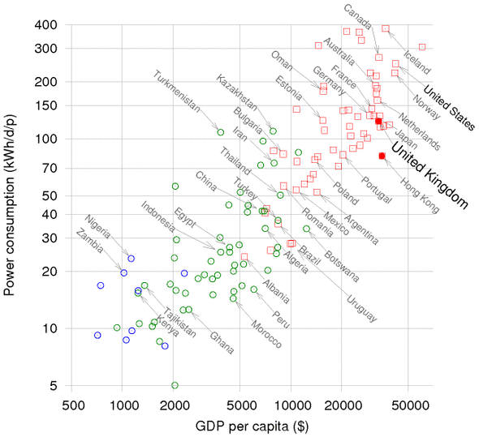
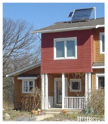
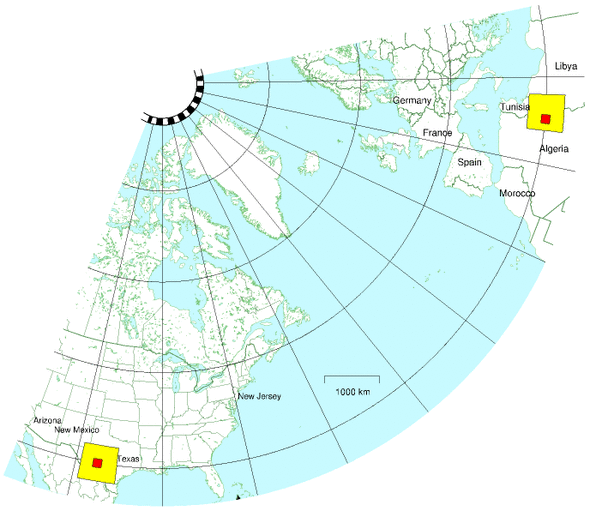

30 Energy plans for Europe, America, and the World
Figure 30.1 shows the power consumptions of lots of countries or regions, versus their gross domestic products (GDPs). It is a widely held assumption that human development and growth are good things, so when sketching world plans for sustainable energy I am going to assume that all the countries with low GDP per capita are going to progress rightwards in figure 30.1. And as their GDPs increase, it’s inevitable that their power consumptions will increase too. It’s not clear what consumption we should plan for, but I think that the average European level (125 kWh per day per person) seems a reasonable assumption; alternatively, we could assume that efficiency measures, like those envisaged in Cartoon Britain in Chapters 19–28, allow all countries to attain a European standard of living with a lower power consumption. In the consumption plan in chapter 27, Cartoon Britain’s consumption fell to about 68 kWh/d/p. Bearing in mind that Cartoon Britain doesn’t have much industrial activity, perhaps it would be sensible to assume a slightly higher target, such as Hong Kong’s 80 kWh/d/p.

Figure 30.1. Power consumption per capita versus GDP per capita, in purchasing-power-parity US dollars. Data from UNDP Human Development Report, 2007. Squares show countries having “high human development;” circles, “medium” or “low.” Both variables are on logarithmic scales. Figure 18.4 shows the same data on normal scales.
Redoing the calculations for Europe
Can Europe live on renewables?
Europe’s average population density is roughly half of Britain’s, so there is more land area in which to put enormous renewable facilities. The area of the European Union is roughly 9000 m2 per person. However, many of the renewables have lower power density in Europe than in Britain: most of Europe has less wind, less wave, and less tide. Some parts do have more hydro (in Scandinavia and Central Europe); and some have more solar. Let’s work out some rough numbers.
Wind
The heart of continental Europe has lower typical windspeeds than the British Isles – in much of Italy, for example, windspeeds are below 4 m/s. Let’s guess that one fifth of Europe has big enough wind-speeds for economical wind-farms, having a power density of 2 W/m2, and then assume that we give those regions the same treatment we gave Britain in Chapter 4, filling 10% of them with wind farms. The area of the European Union is roughly 9000 m2 per person. So wind gives
\[ \frac{\text{1}}{\text{5}}\ \times \text{10\%~} \times \text{~9000~}\text{m}^{\text{2}}\ \times \text{~2\ W/}\text{m}^{\text{2}}\ = \text{~360\ W} \]
which is 9 kWh/d per person.
Hydroelectricity
Hydroelectric production in Europe totals 590 TWh/y, or 67 GW; shared between 500 million, that’s 3.2 kWh/d per person. This production is dominated by Norway, France, Sweden, Italy, Austria, and Switzerland. If every country doubled its hydroelectric facilities – which I think would be difficult – then hydro would give 6.4 kWh/d per person.
Wave
Taking the whole Atlantic coastline (about 4000 km) and multiplying by an assumed average production rate of 10 kW/m, we get 2 kWh/d per person. The Baltic and Mediterranean coastlines have no wave resource worth talking of.
Tide
Doubling the estimated total resource around the British Isles (11 kWh/d per person, from Chapter 14) to allow for French, Irish and Norwegian tidal resources, then sharing between a population of 500 million, we get 2.6 kWh/d per person. The Baltic and Mediterranean coastlines have no tidal resource worth talking of.
Solar photovoltaics and thermal panels on roofs

Figure 30.2. A solar water heater providing hot water for a family in Michigan. The system’s pump is powered by the small photovoltaic panel on the left.
Most places are sunnier than the UK, so solar panels would deliver more power in continental Europe. 10 m2 of roof-mounted photovoltaic panels would deliver about 7 kWh/d in all places south of the UK. Similarly, 2 m2 of water-heating panels could deliver on average 3.6 kWh/d of low-grade thermal heat. (I don’t see much point in suggesting having more than 2 m2 per person of water-heating panels, since this capacity would already be enough to saturate typical demand for hot water.)
What else?
The total so far is 9 + 6.4 + 2 + 2.6 + 7 + 3.6 = 30.6 kWh/d per person. The only resources not mentioned so far are geothermal power, and large-scale solar farming (with mirrors, panels, or biomass).
Geothermal power might work, but it’s still in the research stages. I suggest treating it like fusion power: a good investment, but not to be relied on.
So what about solar farming? We could imagine using 5% of Europe (450 m2 per person) for solar photovoltaic farms like the Bavarian one in figure 6.7 (which has a power density of 5 W/m2). This would deliver an average power of
5 W/m2 × 450 m2 = 54 kWh/d per person.
Solar PV farming would, therefore, add up to something substantial. The main problem with photovoltaic panels is their cost. Getting power during the winter is also a concern!
Energy crops? Plants capture only 0.5 W/m2 (figure 6.11). Given that Europe needs to feed itself, the non-food energy contribution from plants in Europe can never be enormous. Yes, there will be some oil-seed rape here and some forestry there, but I don’t imagine that the total non-food contribution of plants could be more than 12 kWh/d per person.
The bottom line
Let’s be realistic. Just like Britain, Europe can’t live on its own renewables. So if the aim is to get off fossil fuels, Europe needs nuclear power, or solar power in other people’s deserts (as discussed on p179), or both.
Redoing the calculations for North America
The average American uses 250 kWh per day. Can we hit that target with renewables? What if we imagine imposing shocking efficiency measures (such as efficient cars and high-speed electric trains) such that Americans were reduced to the misery of living on the mere 125 kWh/d of an average European or Japanese citizen?
Wind
A study by Elliott et al. (1991) assessed the wind energy potential of the USA. The windiest spots are in North Dakota, Wyoming, and Montana. They reckoned that, over the whole country, 435 000 km2 of windy land could be exploited without raising too many hackles, and that the electricity generated would be 4600 TWh per year, which is 42 kWh per day per person if shared between 300 million people. Their calculations assumed an average power density of 1.2 W/m2, incidentally – smaller than the 2 W/m2 we assumed in Chapter 4. The area of these wind farms, 435 000 km2, is roughly the same as the area of California. The amount of wind hardware required (assuming a load factor of 20%) would be a capacity of about 2600 GW, which would be a 200-fold increase in wind hardware in the USA.
Offshore wind
If we assume that shallow offshore waters with an area equal to the sum of Delaware and Connecticut (20 000 km2, a substantial chunk of all shallow waters on the east coast of the USA) are filled with offshore wind farms having a power density of 3 W/m2, we obtain an average power of 60 GW. That’s 4.8 kWh/d per person if shared between 300 million people. The wind hardware required would be 15 times the total wind hardware currently in the USA. 1
Geothermal
I mentioned the MIT geothermal energy study (Massachusetts Institute of Technology, 2006) in Chapter 16. The authors are upbeat about the potential of geothermal energy in North America, especially in the western states where there is more hotter rock. “With a reasonable investment in R&D, enhanced geothermal systems could provide 100 GW(e) or more of cost-competitive generating capacity in the next 50 years. Further, enhanced geothermal systems provide a secure source of power for the long term.” Let’s assume they are right. 100 GW of electricity is 8 kWh/d per person when shared between 300 million.
Hydro
The hydroelectric facilities of Canada, the USA, and Mexico generate about 660 TWh per year. Shared between 500 million people, that amounts to 3.6 kWh/d per person. Could the hydroelectric output of North America be doubled? If so, hydro would provide 7.2 kWh/d per person.
What else?
The total so far is 42 + 4.8 + 8 + 7.2 = 62 kWh/d per person. Not enough for even a European existence! I could discuss various other options such as the sustainable burning of Canadian forests in power stations. But rather than prolong the agony, let’s go immediately for a technology that adds up: concentrating solar power.
Figure 30.3 shows the area within North America that would provide everyone there (500 million people) with an average power of 250 kWh/d.

Figure 30.3. The little square strikes again. The 600 km by 600 km square in North America, completely filled with concentrating solar power, would provide enough power to give 500 million people the average American’s consumption of 250 kWh/d. This map also shows the square of size 600 km by 600 km in Africa, which we met earlier. I’ve assumed a power density of 15 W/m2, as before. The area of one yellow square is a little bigger than the area of Arizona, and 16 times the area of New Jersey. Within each big square is a smaller 145 km by 145 km square showing the area required in the desert – one New Jersey – to supply 30 million people with 250 kWh per day per person.
The bottom line
North America’s non-solar renewables aren’t enough for North America to live on. But when we include a massive expansion of solar power, there’s enough. So North America needs solar in its own deserts, or nuclear power, or both. 2
Redoing the calculations for the world
How can 6 billion people obtain the power for a European standard of living – 80 kWh per day per person, say?
Wind
The exceptional spots in the world with strong steady winds are the central states of the USA (Kansas, Oklahoma); Saskatchewan, Canada; the southern extremities of Argentina and Chile; northeast Australia; northeast and northwest China; northwest Sudan; southwest South Africa; Somalia; Iran; and Afghanistan. And everywhere offshore except for a tropical strip 60 degrees wide centred on the equator.
For our global estimate, let’s go with the numbers from Greenpeace and the European Wind Energy Association: “the total available wind resources worldwide are estimated at 53 000 TWh per year.” That’s 24 kWh/d per person.
Hydro
Worldwide, hydroelectricity currently contributes about 1.4 kWh/d per person.
From the website www.ieahydro.org, “The International Hydropower Association and the International Energy Agency estimate the world’s total technical feasible hydro potential at 14 000 TWh/year [6.4 kWh/d per person on the globe], of which about 8000 TWh/year [3.6 kWh/d per person] is currently considered economically feasible for development. Most of the potential for development is in Africa, Asia and Latin America.”
Tide
There are several places in the world with tidal resources on the same scale as the Severn estuary (figure 14.8). In Argentina there are two sites: San Jos´e and Golfo Nuevo; Australia has the Walcott Inlet; the USA & Canada share the Bay of Fundy; Canada has Cobequid; India has the Gulf of Khambat; the USA has Turnagain Arm and Knik Arm; and Russia has Tugur.
And then there is the world’s tidal whopper, a place called Penzhinsk in Russia with a resource of 22 GW – ten times as big as the Severn!
Kowalik (2004) estimates that worldwide, 40–80 GW of tidal power could be generated. Shared between 6 billion people, that comes to 0.16– 0.32 kWh/d per person.
Wave
We can estimate the total extractable power from waves by multiplying the length of exposed coastlines (roughly 300 000 km) by the typical power per unit length of coastline (10 kW per metre): the raw power is thus about 3000 GW. 3
Assuming 10% of this raw power is intercepted by systems that are 50%-efficient at converting power to electricity, wave power could deliver 0.5 kWh/d per person.
Geothermal
According to D. H. Freeston of the Auckland Geothermal Institute, geothermal power amounted on average to about 4 GW, worldwide, in 1995 4 – which is 0.01 kWh/d per person.
If we assume that the MIT authors were right, and if we assume that the whole world is like America, then geothermal power offers 8 kWh/d per person.
Solar for energy crops
People get all excited about energy crops like jatropha, which, it’s claimed, wouldn’t need to compete with food for land, because it can be grown on wastelands. People need to look at the numbers before they get excited. 5
The numbers for jatropha are in chapter D. Even if all of Africa were completely covered with jatropha plantations, the power produced, shared between six billion people, would be 8 kWh/d per person (which is only one third of today’s global oil consumption). You can’t fix your oil addiction by switching to jatropha!
Let’s estimate a bound on the power that energy crops could deliver for the whole world, using the same method we applied to Britain in Chapter 6: imagine taking all arable land and devoting it to energy crops. 18% of the world’s land is currently arable or crop land – an area of 27 million km2. That’s 4500 m2 per person, if shared between 6 billion. Assuming a power density of 0.5 W/m2, and losses of 33% in processing and farming, we find that energy crops, fully taking over all agricultural land, would deliver 36 kWh/d per person. Now, maybe this is an underestimate since in figure 6.11 (p43) we saw that Brazilian sugarcane can deliver a power density of 1.6 W/m2, three times bigger than I just assumed. OK, maybe energy crops from Brazil have some sort of future. But I’d like to move on to the last option.
| Sheffield | 28% |
| Edinburgh | 30% |
| Manchester | 31% |
| Cork | 32% |
| London | 34% |
| Cologne | 35% |
| Copenhagen | 38% |
| Munich | 38% |
| Paris | 39% |
| Berlin | 42% |
| Wellington, NZ | 43% |
| Seattle | 46% |
| Toronto | 46% |
| Detroit, MI | 54% |
| Winnipeg | 55% |
| Beijing 2403 | 55% |
| Sydney 2446 | 56% |
| Pula, Croatia | 57% |
| Nice, France | 58% |
| Boston, MA | 58% |
| Bangkok, Thailand | 60% |
| Chicago | 60% |
| New York | 61% |
| Lisbon, Portugal | 61% |
| Kingston, Jamaica | 62% |
| San Antonio | 62% |
| Seville, Spain | 66% |
| Nairobi, Kenya | 68% |
| Johannesburg, SA | 71% |
| Tel Aviv | 74% |
| Los Angeles | 77% |
| Upington, SA | 91% |
| Yuma, AZ | 93% |
| Sahara Desert | 98% |
Table 30.4. World sunniness figures. [3doaeg]
Solar heaters, solar photovoltaics, and concentrating solar power
Solar thermal water heaters are a no-brainer. They will work almost everywhere in the world. China are world leaders in this technology. There’s over 100 GW of solar water heating capacity worldwide, and more than half of it is in China.
Solar photovoltaics were technically feasible for Europe, but I judged them too expensive. I hope I’m wrong, obviously. It will be wonderful if the cost of photovoltaic power drops in the same way that the cost of computer power has dropped over the last forty years.
My guess is that in many regions, the best solar technology for electricity production will be the concentrating solar power that we discussed in chapter 25 and earlier this chapter. There we already established that one billion people in Europe and North Africa could be sustained by country-sized solar power facilities in deserts near the Mediterranean; and that half a billion in North America could be sustained by Arizona-sized facilities in the deserts of the USA and Mexico. I’ll leave it as an exercise for the reader to identify appropriate deserts to help out the other 4.5 billion people in the world.
The bottom line
The non-solar numbers add up as follows. Wind: 24 kWh/d/p; hydro: 3.6 kWh/d/p; tide: 0.3 kWh/d/p; wave: 0.5 kWh/d/p; geothermal: 8 kWh/d/p – a total of 36 kWh/d/p. Our target was a post-European consumption of 80 kWh/d per person. We have a clear conclusion: the non-solar renewables may be “huge,” but they are not huge enough. To complete a plan that adds up, we must rely on one or more forms of solar power. Or use nuclear power. Or both.
Redone again, for 2026
A section added in the 2026 revision. This chapter asks the same question three times, of Europe, of North America and of the world, and gives three versions of the same answer. All three can now be checked.
The world hit MacKay’s total and missed his target
He asks how six billion people are to obtain 80 kWh per day each. Multiply it out and that is 631 exajoules a year. World energy supply in 2025 was 600 EJ — within 5% of his figure.
But it is divided among 8.23 billion people, so the average is 55.5 kWh per day, not 80.6
Two things follow and they cut against each other. The world came far closer to the quantity in his question than anyone in 2008 would have predicted. And it got there while carrying 8.23 billion people rather than the 6 billion of his question — about 1.5 billion more than the world held when he wrote — so the per-person figure went nowhere near a European standard.
Which reframes the question rather than answering it. MacKay asks whether the world could supply 80 kWh/d per person sustainably. The world has not attempted that: it has supplied 55 unsustainably, to more people. The gap that matters is not between his target and what is achievable. It is between his target and what is actual.
The renewables he counted are barely deployed
His world estimates are of the resource — what the wind and the tides could yield if we built everything buildable. Set them against what was actually delivered in 2025:
| kWh/d per person, world | MacKay’s resource estimate | delivered, 2025 |
|---|---|---|
| Wind | 24 | 0.90 |
| Solar | very large | 0.94 |
| Tide | 0.3 | about zero |
| Wave | 0.5 | zero |
Wind is at under 4% of the resource this chapter computes — after eighteen years containing the largest wind build-out in history. Solar is comparable, on a resource many times larger.
That is the finding that ought to change how the chapter is read. MacKay’s conclusion is that the non-solar renewables are not enough. The experience since is that we have not come close to testing it, because nothing has been built to the scale at which a resource limit could bind. What binds is the rate of construction, the cost of capital, land consent and grid connection — which is chapter 18’s argument that the constraint moved, not this chapter’s resource arithmetic.
Europe’s two options both closed
He is specific about Europe: it “needs nuclear power, or solar power in other people’s deserts, or both.” Eighteen years later, both of those went badly, and Europe did neither.
Chapter 25 records the desert option. DESERTEC dissolved within five years of its founding, and in June 2025 Britain declined the one fully engineered version of the idea ever put to a European government. Chapter 24 records the nuclear option: Germany went to zero, Olkiluoto took eighteen years and Flamanville seventeen, and chapter 28 puts Hinkley Point C near £14 a watt.
What Europe did instead was build domestic wind and solar, which now deliver roughly 5 kWh per day per person against a total consumption near 90, and burn gas for most of the rest — with the consequences of 2022.7
That is not a refutation of MacKay. It is the reverse. He said Europe could not do this on its own renewables; Europe tried anyway; and the numbers are where he said they would be. What he did not anticipate is that the two escape routes he identified would be closed by economics and politics rather than by physics — which is this edition’s recurring finding, not his.
America came down without trying
MacKay puts the average American at 250 kWh per day and asks whether shocking efficiency measures could bring them to a European 125. Americans now use about 209 kWh per day — a fall of about a sixth, achieved with no shocking measures at all, largely through shale gas displacing coal and through incremental efficiency — a different mechanism from the offshoring that chapter 15 finds in the British numbers. Wind and solar deliver about 7 kWh/d of the total.
His conclusion — that North America needs solar in its own deserts, or nuclear, or both — stands untouched, and the solar half of it is now being acted on at scale.
And the thing he got right matters more than the things he got wrong
Underneath all three regional answers is one conclusion: solar is the only renewable whose resource is large enough to matter at world scale. In 2008 that was a contested claim, and it was made harder by solar being the most expensive line in his own cost table — £3.96 a watt in chapter 28, against £0.77 for onshore wind.
It is not contested now. Solar became the cheapest source of new electricity across most of the world in the early 2020s, and is being installed faster than any generating technology in history.
He identified the answer and mispriced it by nearly an order of magnitude in the wrong direction. Chapter 25 finds the same error in his choice of concentrating solar over photovoltaics; chapter 28 finds it in his costings. On this book’s record, being right about the destination and wrong about the cost of arriving is the characteristic way to be usefully wrong — and it is a far better failure than being wrong about the destination.
Notes and further reading
| 10.6 kWh/d/p | of wind power, |
| 2.7 kWh/d/p | of solar photovoltaic, |
| 1.9 kWh/d/p | of concentrating solar power, |
| 1.7 kWh/d/p | of biomass, |
| and 5.8 kWh/d/p | of geothermal power |
by 2030. That’s a total of 23 kWh/d/p of new renewables. They also assume a small increase in nuclear power from 7.2 kWh/d/p to 8.3 kWh/d/p, and no change in hydroelectricity. Natural gas would continue to be used, contributing 4 kWh/d/p.
Further reading: Nature magazine has an 8-page article discussing how to power the world (Schiermeier et al., 2008).
North American offshore wind resources. www.ocean.udel.edu/windpower/ResourceMap/index-wn-dp.html↩︎
North America needs solar in its own deserts, or nuclear power, or both. To read Google’s 2008 plan for a 40% defossilization of the USA, see Jeffery Greenblatt’s article Clean Energy 2030 [3lcw9c]. The main features of this plan are efficiency measures, electrification of transport, and electricity production from renewables. Their electricity production plan includes↩︎
Global coastal wave power resource is estimated to be 3000 GW. See Quayle and Changery (1981).↩︎
Geothermal power in 1995. Freeston (1996).↩︎
Energy crops. See Rogner (2000) for estimates similar to mine.↩︎
World and regional figures are from the Energy Institute’s Statistical Review of World Energy 2026. Total energy supply: world 600.3 EJ, Europe 72.1 EJ, United States 93.8 EJ in 2025. Generation: world solar 2811 TWh and wind 2714 TWh; Europe solar 456 TWh and wind 625 TWh; United States solar 393 TWh and wind 469 TWh. Per-person figures use populations of 8.23 billion for the world, about 600 million for the Statistical Review’s “Total Europe” aggregate, and 342 million for the United States, and are given to the precision the denominators support — the European figure in particular depends on which countries the aggregate contains, and readers checking it against an EU-27 population will get a different answer. MacKay’s implied world total of 631 EJ is 80 kWh/d × 365 days × 6 billion people converted at 3.6 MJ per kWh. Note that “total energy supply” counts primary energy, so electricity from wind and solar is counted at its output rather than grossed up for a notional thermal input; on the substitution convention MacKay generally uses, their share would appear larger. That convention difference does not affect the comparison of delivered kWh per person, which is what the table gives.↩︎
World and regional figures are from the Energy Institute’s Statistical Review of World Energy 2026. Total energy supply: world 600.3 EJ, Europe 72.1 EJ, United States 93.8 EJ in 2025. Generation: world solar 2811 TWh and wind 2714 TWh; Europe solar 456 TWh and wind 625 TWh; United States solar 393 TWh and wind 469 TWh. Per-person figures use populations of 8.23 billion for the world, about 600 million for the Statistical Review’s “Total Europe” aggregate, and 342 million for the United States, and are given to the precision the denominators support — the European figure in particular depends on which countries the aggregate contains, and readers checking it against an EU-27 population will get a different answer. MacKay’s implied world total of 631 EJ is 80 kWh/d × 365 days × 6 billion people converted at 3.6 MJ per kWh. Note that “total energy supply” counts primary energy, so electricity from wind and solar is counted at its output rather than grossed up for a notional thermal input; on the substitution convention MacKay generally uses, their share would appear larger. That convention difference does not affect the comparison of delivered kWh per person, which is what the table gives.↩︎